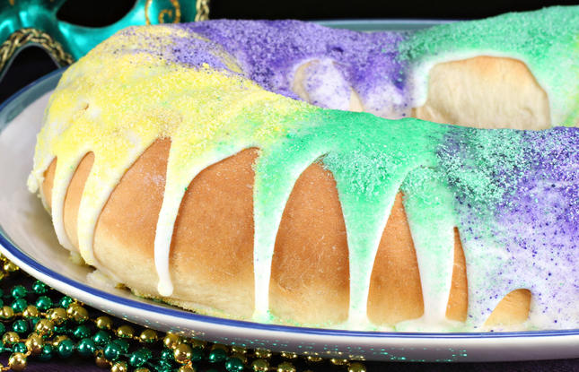

Recipe to bake a Mardi Gras King Cake

Description
The King Cake is a New Orleans tradition that involves a pastry, a small plastic baby, and a party. The King Cake is baked with a small plastic baby hidden inside, the person who gets the slice with baby in it has to host the next party.
Ingredients
Pastry
- 1 cup milk
- 1/4 cup butter
- 2 (0.25oz) packages active dry yeast
- 2/3 cup warm water (110 degrees F)
- 2 eggs
- 1 tsp salt
- 1/2 tsp fresly grated nutmeg
- 5 1/2 cups all-purpose flour
Filling
- 1 cup packed brown sugar
- 1 tsp ground cinnamon
- 1/2 cup all-purpose flour
- 1/2 cup raisins
- 1/2 cup melted butter
Frosting
- 1 cup confectioners' sugar
- 1 tsp water
Steps
- Scald milk, remove from heat and stir in 1/4 cup of butter. Allow mixture to cool to room temperature. In a large bowl, dissolve yeast in the warm water with 1 tablespoon of the white sugar. Let stand until creamy, about 10 minutes.
- When yeast mixture is bubbling, add the cooled milk mixture. Whisk in the eggs. Stir in the remaining white sugar, salt and nutmeg. Beat the flour into the milk/egg mixture 1 cup at a time. When the dough has pulled together, turn it out onto a lightly floured surface and knead until smooth and elastic, about 8 to 10 minutes.
- Lightly oil a large bowl, place the dough in the bowl and turn to coat with oil. Cover with a damp cloth or plastic wrap and let rise in a warm place until doubled in volume, about 2 hours. When risen, punch down and divide dough in half.
- Preheat oven to 375 degrees F (190 degrees C). Grease 2 cookie sheets or line with parchment paper.
- To Make Filling: Combine the brown sugar, ground cinnamon, chopped pecans, 1/2 cup flour and 1/2 cup raisins. Pour 1/2 cup melted butter over the cinnamon mixture and mix until crumbly.
- Roll dough halves out into large rectangles (approximately 10x16 inches or so). Sprinkle the filling evenly over the dough and roll up each half tightly like a jelly roll, beginning at the wide side. Bring the ends of each roll together to form 2 oval shaped rings. Place each ring on a prepared cookie sheet. With scissors make cuts 1/3 of the way through the rings at 1 inch intervals. Let rise in a warm spot until doubled in size, about 45 minutes.
- Bake in preheated oven for 30 minutes. Push the doll into the bottom of the cake. Frost while warm with the confectioners' sugar blended with 1 to 2 tablespoons of water.
Back